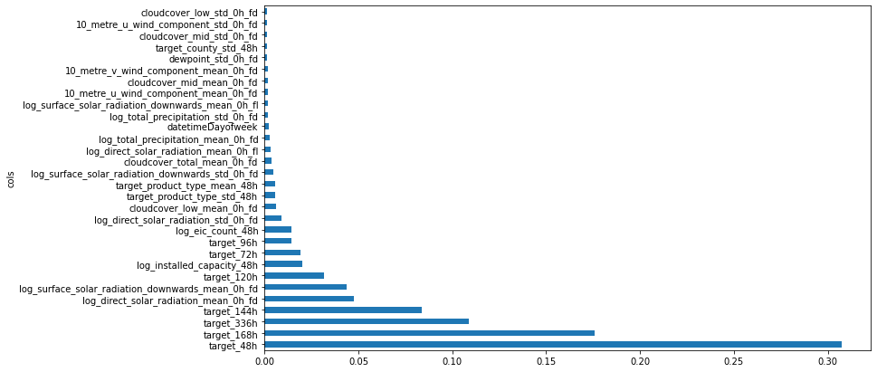
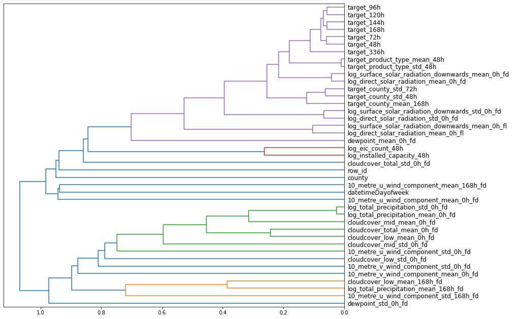
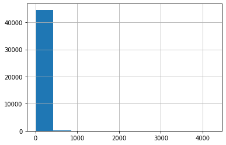
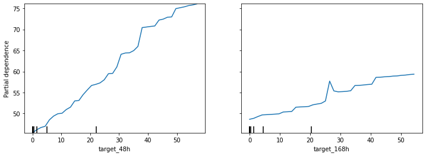
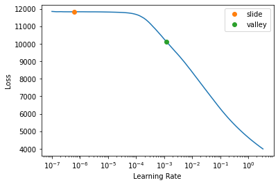

Hide code
%%time
d = Storage()
feature_generator = FeatureGenerator(d)CPU times: user 20.8 s, sys: 4.16 s, total: 25 s
Wall time: 25.3 sIn part 2, we modeled consumption behavior. In part 3, we’ll dig into production.
We’ll fetch the data and generate features:
%%time
d = Storage()
feature_generator = FeatureGenerator(d)CPU times: user 20.8 s, sys: 4.16 s, total: 25 s
Wall time: 25.3 s%%time
features_df = feature_generator.generate_features()CPU times: user 2min 32s, sys: 56.4 s, total: 3min 29s
Wall time: 3min 29sfeatures_df.shape(2017824, 359)And ensure we’re only looking at production from here on:
is_consumption_toggle = 0
features_df = features_df.loc[features_df["is_consumption"] == is_consumption_toggle]print(features_df.loc[features_df["is_consumption"] == 0].shape,
features_df.loc[features_df["is_consumption"] == 1].shape)(1008912, 359) (0, 359)We’ll split the data:
from numpy import random
random.seed(42)
URLs.LOCAL_PATH = Path('/notebooks/kaggle/enefit')
save_path = URLs.LOCAL_PATH/'predict-energy-behavior-of-prosumers/pkl_files'
pid_lookup_df = load_pickle(save_path/'pid_lookup.pkl')
# includes dates of revealed_targets (2 days behind first eval day feb 1, 2023)
train_dates = {
'part': [pd.to_datetime('2022-11-01 00:00:00'), pd.to_datetime('2023-01-29 23:00:00')],
'full': [pd.to_datetime('2021-09-01 00:00:00'), pd.to_datetime('2023-01-29 23:00:00')]
}
eval_dates = {'feb23': [pd.to_datetime('2023-02-01 00:00:00'), pd.to_datetime('2023-02-28 23:00:00')],
'mar23': [pd.to_datetime('2023-03-01 00:00:00'), pd.to_datetime('2023-03-31 23:00:00')],
'apr23': [pd.to_datetime('2023-04-01 00:00:00'), pd.to_datetime('2023-04-30 23:00:00')],
'may23': [pd.to_datetime('2023-05-01 00:00:00'), pd.to_datetime('2023-05-31 23:00:00')]
}
def get_endpoints(is_partial, features_df, eval_month:str):
if is_partial:
train_dates_conds = [features_df['datetime'] == train_dates['part'][0],
features_df['datetime'] == train_dates['part'][1]
]
else:
train_dates_conds = [features_df['datetime'] == train_dates['full'][0],
features_df['datetime'] == train_dates['full'][1]
]
train_endpoints = [features_df['datetime'][train_dates_conds[0]].index[0],
features_df['datetime'][train_dates_conds[1]].index[-1]
]
valid_dates_cond = [features_df['datetime'] == eval_dates[eval_month][0],
features_df['datetime'] == eval_dates[eval_month][1]
]
valid_endpoints = [features_df['datetime'][valid_dates_cond[0]].index[0],
features_df['datetime'][valid_dates_cond[1]].index[-1]
]
return train_endpoints, valid_endpoints
def get_splits(is_partial, features_df, eval_month:str):
train_endpoints, valid_endpoints = get_endpoints(is_partial, features_df, eval_month)
train = features_df.iloc[train_endpoints[0]:train_endpoints[1]+1].index.tolist()
valid = features_df.iloc[valid_endpoints[0]:valid_endpoints[1]+1].index.tolist()
splits = (train, valid)
return splits
def drop_pids_from_train(features_df, splits, pid_lookup_df):
max_n_pids_to_drop = 7
training_pids = set(features_df.iloc[splits[0]].merge(pid_lookup_df, how='left', on=['row_id'])['prediction_unit_id'].unique().tolist())
valid_pids = set(features_df.iloc[splits[1]].merge(pid_lookup_df, how='left', on=['row_id'])['prediction_unit_id'].unique().tolist())
intersection_pids = list(training_pids.intersection(valid_pids))
# pids drop list may not be continuous or sorted.
intersection_pids.sort()
# drop from those not already missing in the valid fold, THIS ROUND.
# to get the number of pids to drop THIS ROUND, pick a random int b/w 1 and the max allowed to drop.
n_pids_drop = random.randint(1, max_n_pids_to_drop)
# to get the pids to drop, index intersection_pids w/ a random int b/w 0 and its last index. repeat for the n_pids_drop chosen for THIS ROUND.
pids_to_drop = [random.randint(0, len(intersection_pids)-1) for i in range(n_pids_drop)]
# drop only from train (slice features_df by training dates from the endpoints, join to lookup pids, mask, apply the mask to the slice)
# get its indices
mask = features_df.iloc[splits[0]].merge(pid_lookup_df, how='left', on=['row_id'])['prediction_unit_id'].isin(pids_to_drop)
return mask, n_pids_drop, pids_to_drop
def setup_tabular_pandas(features_df, procs, max_card, splits, dep_var='target'):
# variables
cont, cat = cont_cat_split(features_df, max_card, dep_var=dep_var)
# setup object
return TabularPandas(features_df, procs, cat, cont, y_names=dep_var, splits=splits)
def setup_training(is_partial, features_df, pid_lookup_df, eval_month, procs, max_card):
features_df = features_df.reset_index(drop=True)
tmp_splits = get_splits(is_partial, features_df, eval_month)
# _get_splits -> _get_pids_drop_mask needs row_id to join pid_lookup_df
pid_mask, n_pids_dropped, pids_dropped = drop_pids_from_train(features_df, tmp_splits, pid_lookup_df)
valid_buffer = pd.Series(np.zeros(len(tmp_splits[1]), dtype='bool'))
pid_mask = pd.concat([pid_mask, valid_buffer])
pid_mask.index = tmp_splits[0] + tmp_splits[1]
tmp_df = features_df.iloc[tmp_splits[0]+tmp_splits[1]][~pid_mask]
features_df_final = tmp_df.reset_index(drop=True)
# re-compute the splits after applying pid_mask.
final_splits = get_splits(is_partial, features_df_final, eval_month)
del tmp_splits, tmp_df
gc.collect()
# setup training
procs = procs
max_card = max_card
to = setup_tabular_pandas(features_df_final, procs, max_card, final_splits)
print(f"n_pids_dropped from train: {n_pids_dropped}")
print(f"pids_dropped from train: {pids_dropped}")
return to, final_splitsis_partial = False
eval_month = 'feb23'
procs = [Categorify]
max_card = 20
to, final_splits = setup_training(is_partial, features_df, pid_lookup_df, eval_month, procs, max_card)n_pids_dropped from train: 4
pids_dropped from train: [14, 60, 20, 23]def get_train_and_valid(to):
xs, y = to.train.xs, to.train.y
valid_xs, valid_y = to.valid.xs, to.valid.y
return xs, y, valid_xs, valid_y
xs, y, valid_xs, valid_y = get_train_and_valid(to)
print(len(xs), len(y), len(valid_xs), len(valid_y))765510 765510 44904 44904Now we’re in business. Let’s train a random forest and look at its feature importances:
def mae(preds, y): return round((preds-y).abs().mean(), 6)
def m_mae(m, xs, y): return mae(m.predict(xs), y)def rf(xs, y, n_estimators=40, max_features=0.5, min_samples_leaf=5, **kwargs):
return RandomForestRegressor(n_jobs=-1,
n_estimators=n_estimators,
max_samples=int(0.5*len(xs)),
max_features=max_features,
min_samples_leaf=min_samples_leaf,
oob_score=True).fit(xs, y)%%time
m = rf(xs, y)CPU times: user 2h 56min 33s, sys: 26.2 s, total: 2h 57min
Wall time: 30min 56sprint("train mae: ", m_mae(m, xs, y))
print("valid mae: ", m_mae(m, valid_xs, valid_y))
print("OOB error: ", mae(m.oob_prediction_, y))train mae: 11.673442
valid mae: 49.841143
OOB error: 16.204788def rf_feat_importance(m, df):
return pd.DataFrame({'cols':df.columns, 'imp':m.feature_importances_}
).sort_values('imp', ascending=False)
def plot_fi(fi):
return fi.plot('cols', 'imp', 'barh', figsize=(12,7), legend=False)fi = rf_feat_importance(m, xs)
fi[:10]| cols | imp | |
|---|---|---|
| 286 | target_48h | 0.307471 |
| 291 | target_168h | 0.175694 |
| 292 | target_336h | 0.108706 |
| 290 | target_144h | 0.083727 |
| 27 | log_direct_solar_radiation_mean_0h_fd | 0.047537 |
| 28 | log_surface_solar_radiation_downwards_mean_0h_fd | 0.043826 |
| 289 | target_120h | 0.031447 |
| 18 | log_installed_capacity_48h | 0.019918 |
| 287 | target_72h | 0.019280 |
| 288 | target_96h | 0.014335 |
plot_fi(fi[:30]);
The targets’ 7-14 day history, installed capacity, and the forecasted weather are the most influential features. We’ll focus on the top-scoring 40.
fi[:40]| cols | imp | |
|---|---|---|
| 286 | target_48h | 0.307471 |
| 291 | target_168h | 0.175694 |
| 292 | target_336h | 0.108706 |
| 290 | target_144h | 0.083727 |
| 27 | log_direct_solar_radiation_mean_0h_fd | 0.047537 |
| ... | ... | ... |
| 42 | log_total_precipitation_mean_168h_fd | 0.001138 |
| 20 | dewpoint_mean_0h_fd | 0.001080 |
| 312 | target_county_mean_168h | 0.001049 |
| 50 | 10_metre_v_wind_component_std_0h_fd | 0.001026 |
| 37 | 10_metre_u_wind_component_mean_168h_fd | 0.001025 |
40 rows × 2 columns
to_keep = fi[fi.imp>0.001].cols
len(xs.columns), len(to_keep)(358, 41)xs_imp = xs[to_keep]
valid_xs_imp = valid_xs[to_keep]%%time
m = rf(xs_imp, y)CPU times: user 19min 45s, sys: 2.81 s, total: 19min 48s
Wall time: 3min 32sprint("train mae: ", m_mae(m, xs_imp, y))
print("valid mae: ", m_mae(m, valid_xs_imp, valid_y))
print("OOB error: ", mae(m.oob_prediction_, y))train mae: 12.529778
valid mae: 14.233786
OOB error: 16.768616We’ve achieved a dramatic improvement without much change in both the training and OOB errors. We’ll remove redundancy next.
cluster_columns(xs_imp, figsize=(12, 11))
In the figure above, the most similar features are merged early, far from the tree’s root on the left. There don’t appear to be potentially redundant features, so we’ll proceed.
xs_final = xs_imp
valid_xs_final = valid_xs_impWe saw that the top two predictors were target_48h and target_168h. To see how they vary with the target, we’ll first note where the bulk of the data falls:
valid_xs_final['target_48h'].hist()
valid_xs_final['target_48h'].describe()count 44904.000000
mean 15.214073
std 89.586014
min 0.000000
25% 0.000000
50% 0.052000
75% 2.450000
max 4253.659180
Name: target_48h, dtype: float64valid_xs_final['target_168h'].hist()
valid_xs_final['target_168h'].describe()count 44904.000000
mean 14.775428
std 89.288246
min 0.000000
25% 0.000000
50% 0.040000
75% 2.234250
max 4253.659180
Name: target_168h, dtype: float64print(len(valid_xs_final['target_48h'][valid_xs_final['target_48h'] > 100]),
len(valid_xs_final['target_168h'][valid_xs_final['target_168h'] > 100]))1392 1336In both cases, most of the values are between 0 and 3.
from sklearn.inspection import partial_dependence
from sklearn.inspection import PartialDependenceDisplay
fig,ax = plt.subplots(figsize=(12, 4))
PartialDependenceDisplay.from_estimator(m, valid_xs_final, ['target_48h', 'target_168h'],
grid_resolution=40, ax=ax)
Over most of the observations, the model is ~5x more responsive to the 2-day lag than to the 7-day lag. The jumps in lag-2 and lag-7 beyond the 0-3 range are likely unreliable due to data sparsity.
Next we’ll alleviate domain shift. Let’s find the features that exhibit the most shift:
%time
df_dom = pd.concat([xs_final, valid_xs_final])
is_valid = np.array([0]*len(xs_final) + [1]*len(valid_xs_final))
m_dom = rf(df_dom, is_valid)
rf_feat_importance(m_dom, df_dom)[:10]CPU times: user 4 µs, sys: 0 ns, total: 4 µs
Wall time: 10 µs| cols | imp | |
|---|---|---|
| 32 | row_id | 0.955003 |
| 36 | dewpoint_mean_0h_fd | 0.018782 |
| 40 | cloudcover_low_mean_168h_fd | 0.006110 |
| 24 | 10_metre_v_wind_component_mean_0h_fd | 0.003335 |
| 39 | 10_metre_u_wind_component_mean_168h_fd | 0.002816 |
| 12 | cloudcover_low_mean_0h_fd | 0.002591 |
| 33 | 10_metre_u_wind_component_std_168h_fd | 0.002023 |
| 28 | 10_metre_u_wind_component_std_0h_fd | 0.002015 |
| 35 | log_total_precipitation_mean_168h_fd | 0.001318 |
| 16 | cloudcover_total_mean_0h_fd | 0.001216 |
It makes sense thatrow_id shifts the most since it is incremented most frequently. Intuitively, it shouldn’t bear any inherent influence on the target although it has shown up among the top 40 most influential features. It could be one of the features driving some of the overfitting. Let’s try removing it.
%%time
m = rf(xs_final, y)
print('baseline', m_mae(m, valid_xs_final, valid_y))
c = 'row_id'
m = rf(xs_final.drop(c,axis=1), y)
print(c, m_mae(m, valid_xs_final.drop(c,axis=1), valid_y))baseline 14.881774
row_id 13.242199
CPU times: user 37min 18s, sys: 4.24 s, total: 37min 22s
Wall time: 6min 44stime_vars = ['row_id']
xs_final_time = xs_final.drop(time_vars, axis=1)
valid_xs_time = valid_xs_final.drop(time_vars, axis=1)
print("train mae: ", m_mae(m, xs_final_time, y))
print("OOB error: ", mae(m.oob_prediction_, y))train mae: 12.647144
OOB error: 16.883626Looks good. Let’s try dropping data prior to Jan 2022:
filt = xs['datetimeYear']>1
xs_filt = xs_final_time[filt]
y_filt = y[filt]%%time
m = rf(xs_filt, y_filt)
print("train mae: ", m_mae(m, xs_filt, y_filt))
print("valid mae: ", m_mae(m, valid_xs_time, valid_y))
print("OOB error: ", mae(m.oob_prediction_, y_filt))train mae: 13.872813
valid mae: 13.078788
OOB error: 18.6608
CPU times: user 14min 13s, sys: 1.93 s, total: 14min 15s
Wall time: 2min 35slen(xs.columns), len(xs_filt.columns)(358, 40)len(xs), len(xs_filt)(765510, 594257)The forest has a slightly higher training error than validation error, which points to good generalization. But the OOB error exceeds the forests’ validation error, which shows that the individual trees are overfitting their training subsets. This may be because this forest includes only 40 trees, so the OOB error may be unstable. Using more trees may alleviate the discrepancy. For now, we’ll keep going with a neural network.
from numpy import random
random.seed(42)
is_partial = False
eval_month = 'feb23'
procs = [Categorify, Normalize]
max_card = 9000
dep_var = 'target'
# need ['datetime', 'row_id'] for the splits, which are not in the final feature set. Dropped afterward.
to_nn, final_splits = setup_training(is_partial,
features_df[list(xs_final_time.columns) + ['datetime', 'row_id', dep_var]],
pid_lookup_df,
eval_month,
procs,
max_card)n_pids_dropped from train: 4
pids_dropped from train: [14, 60, 20, 23]Let’s confirm that TabularPandas correctly identified continuous and categorical variables:
to_nn.cont_names.remove('row_id')
to_nn.cat_names.remove('datetime')
{'cont_names': list(to_nn.cont_names),
'cat_names': list(to_nn.cat_names)
}{'cont_names': ['target_48h',
'target_168h',
'target_336h',
'target_144h',
'log_direct_solar_radiation_mean_0h_fd',
'log_surface_solar_radiation_downwards_mean_0h_fd',
'target_120h',
'log_installed_capacity_48h',
'target_72h',
'target_96h',
'log_eic_count_48h',
'log_direct_solar_radiation_std_0h_fd',
'cloudcover_low_mean_0h_fd',
'target_product_type_std_48h',
'target_product_type_mean_48h',
'log_surface_solar_radiation_downwards_std_0h_fd',
'cloudcover_total_mean_0h_fd',
'log_direct_solar_radiation_mean_0h_fl',
'log_total_precipitation_mean_0h_fd',
'log_total_precipitation_std_0h_fd',
'log_surface_solar_radiation_downwards_mean_0h_fl',
'10_metre_u_wind_component_mean_0h_fd',
'cloudcover_mid_mean_0h_fd',
'10_metre_v_wind_component_mean_0h_fd',
'dewpoint_std_0h_fd',
'target_county_std_48h',
'cloudcover_mid_std_0h_fd',
'10_metre_u_wind_component_std_0h_fd',
'cloudcover_low_std_0h_fd',
'target_county_std_72h',
'10_metre_u_wind_component_std_168h_fd',
'cloudcover_total_std_0h_fd',
'log_total_precipitation_mean_168h_fd',
'dewpoint_mean_0h_fd',
'target_county_mean_168h',
'10_metre_v_wind_component_std_0h_fd',
'10_metre_u_wind_component_mean_168h_fd',
'cloudcover_low_mean_168h_fd'],
'cat_names': ['datetimeDayofweek', 'county']}And train the network:
def nn_mae(preds, y): return torch.round((preds - y).abs().mean(), decimals=6)bs = 1024
dls = to_nn.dataloaders(bs)y = to_nn.train.y
y.min(),y.max()(0.0, 7814.313)y_max_factor = 3
np.ceil(y_max_factor*y.max())23443.0y_max = np.ceil(y_max_factor*y.max())
layers = [1000, 500]learn = tabular_learner(dls, y_range=(0, y_max), layers=layers,
n_out=1, loss_func=F.l1_loss)learn.lr_find(suggest_funcs=[slide, valley])SuggestedLRs(slide=6.309573450380412e-07, valley=0.0012022644514217973)
We’ll use a 1e-3 learning rate and train for a few epochs:
learn.fit_one_cycle(5, 1e-3)| epoch | train_loss | valid_loss | time |
|---|---|---|---|
| 0 | 385.152618 | 89.120911 | 00:18 |
| 1 | 28.974539 | 13.420791 | 00:16 |
| 2 | 23.203011 | 13.486762 | 00:15 |
| 3 | 18.423313 | 11.819149 | 00:19 |
| 4 | 17.882912 | 11.734632 | 00:19 |
And view the predictions (scroll to the right end):
learn.show_results()| county | datetimeWeek | is_holiday | product_type | datetimeDayofweek | is_business | target_168h | target_336h | target_144h | target_48h | target_120h | target_county_std_168h | target_county_std_336h | target_72h | target_county_mean_168h | target_county_mean_336h | target_96h | log_surface_solar_radiation_downwards_mean_0h_fd | log_installed_capacity_48h | log_direct_solar_radiation_mean_0h_fd | log_eic_count_48h | target_is_business_std_168h | target_county_std_144h | target_is_cons_std_168h | sin(datetimeDayofyear) | target_product_type_std_168h | target_county_std_48h | log_direct_solar_radiation_std_0h_fd | log_surface_solar_radiation_downwards_mean_168h_fd | target_is_business_mean_336h | cloudcover_low_mean_0h_fd | temperature_mean_0h_fd | target | target_pred | |
|---|---|---|---|---|---|---|---|---|---|---|---|---|---|---|---|---|---|---|---|---|---|---|---|---|---|---|---|---|---|---|---|---|---|---|
| 0 | 15.0 | 8.0 | 1.0 | 2.0 | 6.0 | 2.0 | -0.262886 | -0.239930 | -0.260615 | -0.253527 | -0.262182 | -0.202138 | -0.307286 | -0.247566 | -0.058346 | -0.111946 | -0.253991 | -0.889688 | -0.362890 | -0.827848 | -0.497701 | 0.772622 | -0.282687 | 0.029818 | 1.397399 | -0.679453 | -0.069211 | -0.751869 | -0.883614 | 0.964591 | 1.459237 | -1.211010 | 127.239998 | 134.697464 |
| 1 | 4.0 | 7.0 | 1.0 | 2.0 | 7.0 | 2.0 | -0.330954 | -0.323535 | -0.334922 | -0.338295 | -0.335445 | -0.187287 | -0.164677 | -0.336010 | -0.142387 | -0.084139 | -0.337699 | -0.889688 | -0.912775 | -0.827848 | -0.941712 | 0.653363 | -0.223687 | -0.136800 | 1.306189 | -0.697084 | -0.247657 | -0.751869 | -0.883614 | 0.893931 | 0.495124 | -0.811021 | 30.806000 | 46.891251 |
| 2 | 5.0 | 5.0 | 1.0 | 2.0 | 4.0 | 1.0 | -0.344467 | -0.342138 | -0.347831 | -0.347422 | -0.344598 | -0.340768 | -0.363358 | -0.347488 | -0.202386 | -0.229166 | -0.345382 | -0.889688 | -0.594519 | -0.827848 | -0.497701 | -0.594282 | -0.368845 | 0.176550 | 0.988584 | -0.697989 | -0.412845 | -0.751869 | -0.883614 | -0.523382 | 1.371129 | -0.838103 | 19.188999 | 25.702089 |
| 3 | 3.0 | 7.0 | 1.0 | 2.0 | 7.0 | 2.0 | -0.289490 | -0.279803 | -0.255431 | -0.248302 | -0.272753 | -0.446600 | -0.421871 | -0.239236 | -0.453071 | -0.407710 | -0.268927 | 1.030597 | -1.226184 | 0.143757 | -1.027643 | 1.120253 | -0.424511 | 0.571177 | 1.306189 | -0.669880 | -0.322436 | 2.449245 | 1.079126 | 0.928739 | 1.283659 | -0.868476 | 96.105003 | 73.928062 |
| 4 | 16.0 | 8.0 | 1.0 | 2.0 | 7.0 | 2.0 | -0.183543 | -0.193427 | -0.194822 | -0.215773 | -0.188846 | -0.686955 | -0.673423 | -0.192416 | -0.496016 | -0.502450 | -0.170561 | -0.889688 | 0.245607 | -0.827848 | -0.201525 | 0.982311 | -0.657861 | 0.407525 | 1.411405 | -0.635931 | -0.685927 | -0.751869 | -0.883614 | 0.968042 | -0.691459 | -1.517333 | 188.632004 | 208.133240 |
| 5 | 4.0 | 7.0 | 1.0 | 2.0 | 4.0 | 2.0 | -0.330865 | -0.320998 | -0.334936 | -0.338640 | -0.330539 | -0.167406 | -0.119311 | -0.336651 | -0.143195 | -0.080749 | -0.332357 | -0.889688 | -0.912775 | -0.827848 | -0.941712 | 1.373603 | -0.117017 | 1.038111 | 1.256177 | -0.603400 | -0.202103 | -0.751869 | -0.883614 | 1.533619 | 1.582296 | -0.634451 | 46.298000 | 53.170086 |
| 6 | 4.0 | 5.0 | 1.0 | 4.0 | 4.0 | 2.0 | 0.575863 | 0.502346 | 0.570968 | 0.550353 | 0.558134 | -0.204478 | -0.250005 | 0.511721 | -0.218346 | -0.252642 | 0.532916 | -0.889688 | 1.269762 | -0.827848 | 0.525585 | 0.855744 | -0.211454 | 0.152174 | 0.988584 | 1.158699 | -0.226203 | -0.751869 | -0.883614 | 0.865195 | 1.446751 | -0.840503 | 1089.301025 | 1143.673706 |
| 7 | 11.0 | 6.0 | 1.0 | 2.0 | 6.0 | 1.0 | -0.285181 | -0.302084 | -0.304559 | -0.306237 | -0.307852 | -0.487169 | -0.495147 | -0.307560 | -0.255986 | -0.339585 | -0.306730 | -0.889688 | -0.087960 | -0.827848 | 0.423409 | -0.373181 | -0.508577 | 0.262175 | 1.166752 | -0.644339 | -0.466170 | -0.751869 | -0.883614 | -0.397293 | -1.234372 | -1.086801 | 70.140999 | 70.644394 |
| 8 | 16.0 | 6.0 | 1.0 | 2.0 | 7.0 | 1.0 | -0.296332 | -0.299581 | -0.313292 | -0.314098 | -0.311906 | -0.637992 | -0.634026 | -0.332257 | -0.458398 | -0.461850 | -0.308999 | 0.983235 | -0.584762 | 0.296804 | 0.348233 | -0.691865 | -0.314547 | 0.217005 | 1.185220 | -0.742475 | -0.406558 | 2.658769 | 1.114219 | -0.522843 | -0.189756 | -0.665068 | 61.251999 | 75.555504 |
These look reasonable. Let’s train a few more epochs:
learn = tabular_learner(dls, y_range=(0, y_max), layers=layers,
n_out=1, loss_func=F.l1_loss)
learn.fit_one_cycle(10, 1e-3)| epoch | train_loss | valid_loss | time |
|---|---|---|---|
| 0 | 1058.503296 | 307.893738 | 00:18 |
| 1 | 33.334896 | 16.926445 | 00:17 |
| 2 | 26.946150 | 12.923368 | 00:16 |
| 3 | 21.992962 | 12.006287 | 00:15 |
| 4 | 20.392881 | 12.321980 | 00:16 |
| 5 | 19.228310 | 11.995186 | 00:17 |
| 6 | 17.760178 | 11.779169 | 00:15 |
| 7 | 16.319954 | 11.705316 | 00:15 |
| 8 | 15.099010 | 11.637057 | 00:15 |
| 9 | 14.862897 | 11.599226 | 00:16 |
preds, targs = learn.get_preds()
print("nn valid mae: ", nn_mae(preds, targs))nn valid mae: tensor(11.5992)We again see a higher training error than validation error. This may be attributable to regularization, where training is made harder to prevent overfitting. fastai’s tabular_learner uses Dropout, weight decay, and batch normalization by default. It’s also possible that the validation set used during our development process is simply easier than the training set. In part 4, we will perform cross-validation, where we’ll train and evaluate on 3 different data splits, which will give us a better idea of our performance.
Let’s see whether ensembling can take us further.
rf_preds = m.predict(valid_xs_time)
ens_preds = (to_np(preds.squeeze()) + rf_preds) /2(ens_preds - valid_y).abs().mean()11.833211038886864Let’s try using the network’s categorical embeddings in a random forest.
def embed_features(learner, xs):
# deep copy (creates new object w/ a copy of indices and data of original)
xs = xs.copy()
for i, feature in enumerate(learn.dls.cat_names):
# get the embedding (move it to CPU first)
# .cpu() see nn.ModuleList.cpu?
# for learn.model.embeds, see learn.model??
emb = learn.model.embeds[i].cpu()
# embed the categorical feature and return a df using the indices of xs
# for embedding_dim see nn.Embedding??
# join previously failed b/c col names overlap for each embedding feature
# they were previously all to be named feature_0, feature_1, etc.
new_feat = pd.DataFrame(emb(tensor(xs[feature], dtype=torch.int64)),
index=xs.index,
columns=[f"{feature}_{j}" for j in range(emb.embedding_dim)])
# drop the categorical feature
xs.drop(columns=feature, inplace=True)
# left join the embedded features w/ xs
# returns nn's cat embeddings concatenated w/ original cont variables
# the cont variables will be the same for the rf and the nn
xs = xs.join(new_feat)
return xsembedded_xs = embed_features(learn, learn.dls.train.xs)
embedded_valid_xs = embed_features(learn, learn.dls.valid.xs)
embedded_xs.shape, embedded_valid_xs.shape((765510, 51), (44904, 51))embedded_xs.columnsIndex(['target_48h', 'target_168h', 'target_336h', 'target_144h',
'log_direct_solar_radiation_mean_0h_fd',
'log_surface_solar_radiation_downwards_mean_0h_fd', 'target_120h',
'log_installed_capacity_48h', 'target_72h', 'target_96h',
'log_eic_count_48h', 'log_direct_solar_radiation_std_0h_fd',
'cloudcover_low_mean_0h_fd', 'target_product_type_std_48h',
'target_product_type_mean_48h',
'log_surface_solar_radiation_downwards_std_0h_fd',
'cloudcover_total_mean_0h_fd', 'log_direct_solar_radiation_mean_0h_fl',
'log_total_precipitation_mean_0h_fd',
'log_total_precipitation_std_0h_fd',
'log_surface_solar_radiation_downwards_mean_0h_fl',
'10_metre_u_wind_component_mean_0h_fd', 'cloudcover_mid_mean_0h_fd',
'10_metre_v_wind_component_mean_0h_fd', 'dewpoint_std_0h_fd',
'target_county_std_48h', 'cloudcover_mid_std_0h_fd',
'10_metre_u_wind_component_std_0h_fd', 'cloudcover_low_std_0h_fd',
'target_county_std_72h', '10_metre_u_wind_component_std_168h_fd',
'cloudcover_total_std_0h_fd', 'log_total_precipitation_mean_168h_fd',
'dewpoint_mean_0h_fd', 'target_county_mean_168h',
'10_metre_v_wind_component_std_0h_fd',
'10_metre_u_wind_component_mean_168h_fd', 'cloudcover_low_mean_168h_fd',
'datetimeDayofweek_0', 'datetimeDayofweek_1', 'datetimeDayofweek_2',
'datetimeDayofweek_3', 'datetimeDayofweek_4', 'county_0', 'county_1',
'county_2', 'county_3', 'county_4', 'county_5', 'county_6', 'county_7'],
dtype='object')%%time
m_cat_emb = rf(embedded_xs, y)
# pass m_cat_emb for the model. includes both cont variables and nn's cat embeddings
# pass the embedded xs for both train and valid errors
print("train mae: ", m_mae(m_cat_emb, embedded_xs, y))
print("valid mae: ", m_mae(m_cat_emb, embedded_valid_xs, valid_y))
print("OOB mae: ", mae(m_cat_emb.oob_prediction_, y))train mae: 12.522175
valid mae: 13.452001
OOB mae: 16.744852
CPU times: user 21min 59s, sys: 3.78 s, total: 22min 3s
Wall time: 3min 59sThe neural network gave us the best MAE (11.59). However, since the random forest and neural network ensemble scores a close 11.83 while mitigating each model’s weaknesses, we will proceed with the ensemble.
In part 4, we will finally see whether modeling consumption and production independently will give more accurate overall predictions than a modeling them together.